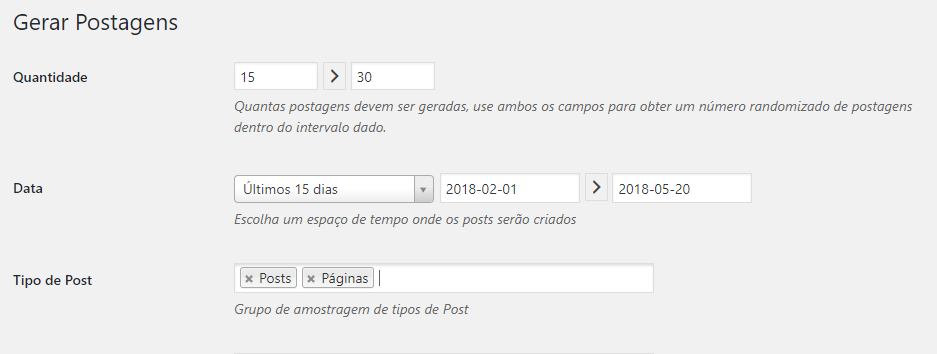

Conteúdo rápido para testar temas WordPress
Conheça uma ferramenta que permite gerar conteúdo automático para fazer uma avaliação de temas WordPress sem muito esforço e complicação. Basta instalar um plugin e fazer as configurações básicas.
Testando temas WordPress
Muitas vezes queremos avaliar temas WordPress para um novo projeto. No entanto, para testar todos os recursos precisamos de conteúdo e isso pode demandar tempo e esforço. Mas, assim como acontece em outras situações, existe plugin disponibilizado no diretório do WordPress que facilita essa atividade.
O plugin FakePress
Na área administrativa do WordPress selecione o menu “Plugins” -> “Adicionar novo”. Na busca por palavras chaves informe “fake content”, sendo apresentado assim o plugin FakerPress.
Importante observar algumas características do plugin.
De acordo com a avaliação apresentada no curso WordPress Prático, este é um ótimo plugin, pois possui boa classificação, muitas instalações e atualizações constantes.
Configuração do plugin
Depois de instalado e ativado é apresentada a opção “FakerPress” no menu administrativo do WordPress. Para gerar Posts e Páginas para testar temas WordPress escolher o subitem “Posts”
Ainda que existam diversas configurações, as principais seriam a quantidade, data e tipos de postagem (primeira imagem abaixo) e as configurações de Post Content, isto é, as informações do conteúdo dos posts e páginas geradas. Logo que essas configurações básicas forem definidas é possível usar a função “Gerar”. Por fim serão apresentados os IDs do conteúdo gerado pelo plugin.

Existem outras configurações relacionadas com as características dos posts, como quantidade de parágrafos e provedores de imagens.
Exclusão das postagens falsas
Por fim é possível excluir as postagens faltas depois de testar os temas WordPress. Antes de mais nada acesse a opção “FakerPress” -> “Configurações” na área administrativa. No campo “Apagar dados falsos” informe o valor “Let it Go!” como solicitado nas instruções e clique em “Deletar!”.
Lembre-se que os dados gerados não devem ser usados em produção, mas sim para testes de temas WordPress.
No vídeo abaixo, no canal do YouTube do Presença Online .NET, mostramos o passo-a-passo de instalação e configuração do plugin, para testes de temas WordPress.